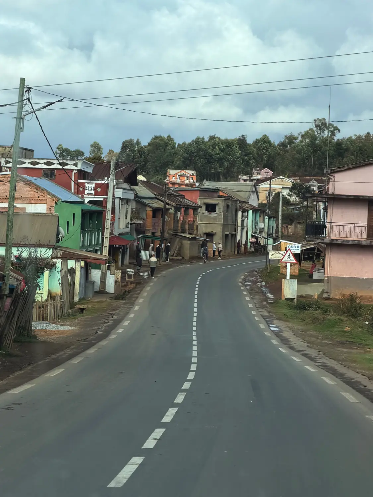
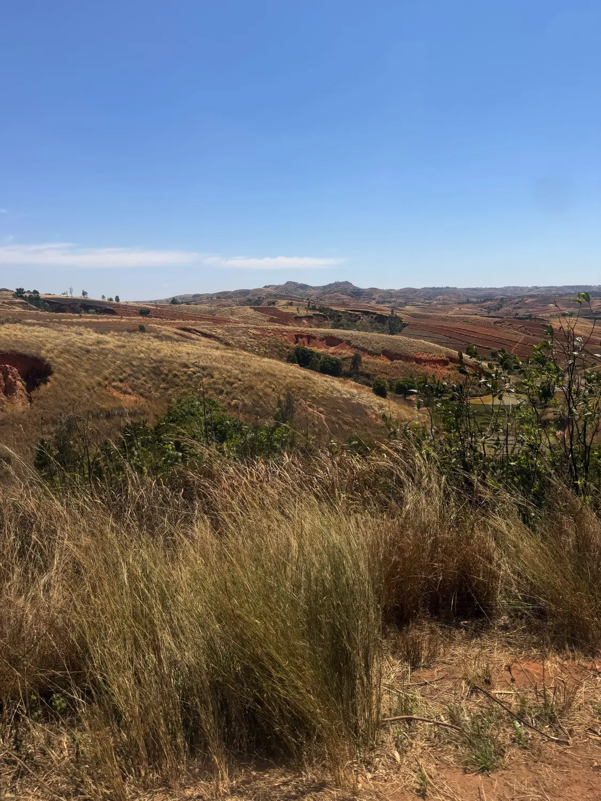
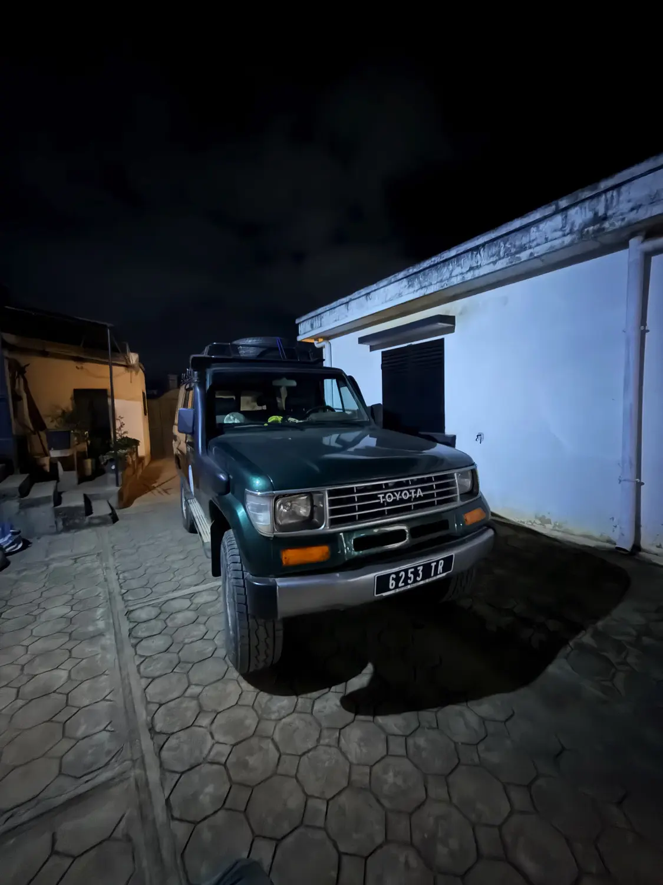

The journey01
18 hours across Madagascar
📍 Antananarivo → Morondava
We did Madagascar in a very different way. We booked a five-day trip with a private driver and drove over 18 hours from the capital, Antananarivo, all the way west to Morondava, then another 18 hours back. It was extremely long, but honestly it was one of the most incredible parts of the trip. Our driver was super friendly and had an older 4x4 that, luckily for us, ran perfectly the whole way. We booked it all through Remote River Expeditions: communication was great, they built exactly the trip we wanted in the time we had, and at about €65 a day for the driver the price was very reasonable compared to the other operators we contacted.
Long but unforgettableBook a driver
🚙 Remote River Expeditions
We booked this